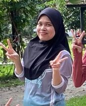
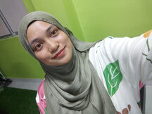
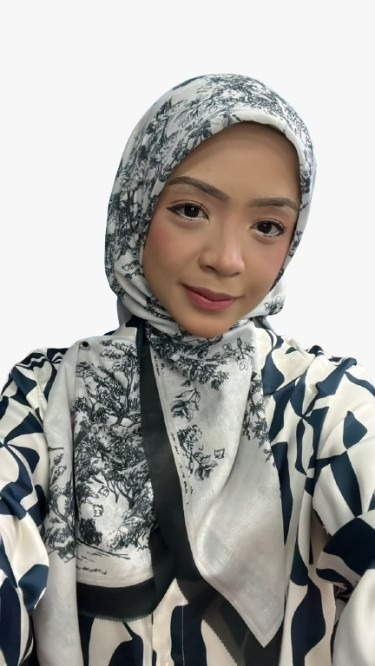

Clinical linguist previously based at University of Hawaii and former Linguistics lecturer at USM. Founded the first private multidisciplinary intervention center in 2005. Over 20 years of experience in language disorders and learning assessments for children with learning difficulties. Pioneered the Early Intervention Screening Program under the State of Selangor.
Hi, I'm Nasirah
Co-Director and Occupational Therapist
OTR/L · Bachelor's Degree in Occupational Therapy · Certified in the Integration Primitive Reflexes · Licensed Occupational Therapist and active member of Malaysian Occupational Therapy Association (MOTA) · MAHPC(OT)02144
Former NGO volunteer with clinical training at Klinik Pakar UiTM, Pusat Terapi Carakerja UiTM Puncak Alam, and Hospital Selayang. Experienced with GDD, Autism, ADHD, and other syndromes.
Hi, I'm Robin
Clinical Psychologist
Master of Clinical Psychology, UCSI University · Registered Clinical Psychologist, Malaysian Allied Health Professions Council (MAHPC: CP00517) · Member, Malaysian Society of Clinical Psychology (MSCP: CP1-00619) · Trained in PEERS® for Preschoolers
I help people give a voice to their struggles, and build a life that feels like their own.
Robin works with children, adolescents and adults across psychological assessment, diagnosis and intervention — anxiety, depression, stress, adjustment difficulties, and neurodivergence including Autism Spectrum Disorder (ASD) and Attention-Deficit/Hyperactivity Disorder (ADHD). She practises Cognitive Behavioural Therapy (CBT) and Acceptance and Commitment Therapy (ACT) with integrated art therapy, supporting clients to build psychological flexibility and live a meaningful life. A strong advocate for mental health literacy and early intervention, she has delivered mental health talks and psychoeducation sessions in public schools for students, educators and families.
Hi, I'm Norizzati
Head of Occupational Therapy Department
OTR/L · Bachelor's degree in Occupational Therapy from UiTM · Member of the Malaysian Occupational Therapy Association (MOTA)
Over 10 years of experience working with children. Conducts assessments and occupational interventions for developmental delays, with experience in special education and Selangor screening programs.

Hi, I'm Emalin
Speech Therapist
Bachelor in Speech Language Pathology, Universiti Sains Malaysia

Hi, I'm Syahira
Occupational Therapist
Diploma in Occupational Therapy, Universiti Teknologi MARA (UiTM)

Hi, I'm Farwizah
Special Education Teacher
Bachelor of Psychology (Hons), Universiti Pendidikan Sultan Idris (UPSI) · Diploma Pascasiswazah Pendidikan (DPP), Universiti Kebangsaan Malaysia (UKM) · Permit Mengajar JPNS.SPS-2026/PTGPP/14/0805
I want every child to grow into as much of themselves as they can — and to do it independently.
A special needs education teacher with a background in psychology and education, working to help children grow to the most of their potential and become independent. Also active in volunteerism — supporting those in need and contributing to children's development.